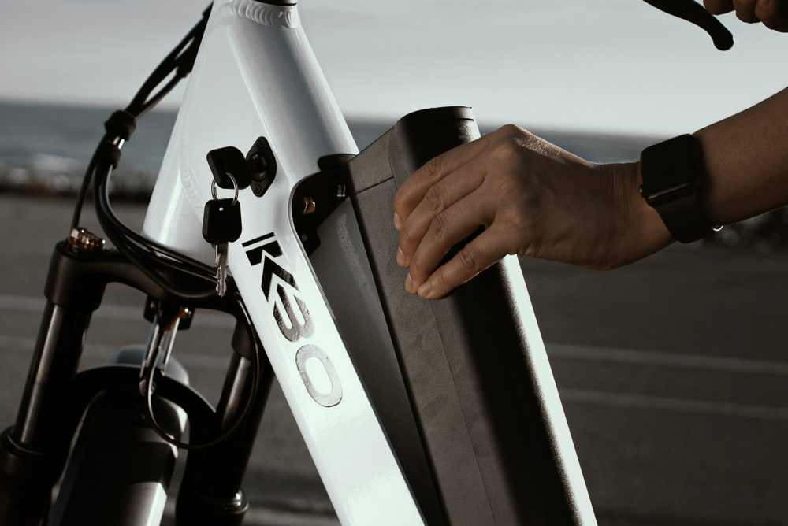
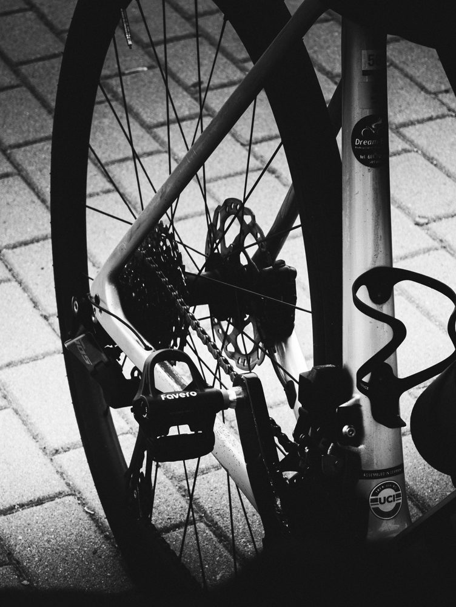

Performance urbaine
City Volt S
Conçu pour les trajets quotidiens et les longues promenades. Son moteur puissant et sa grande autonomie vous garantissent des déplacements fluides sans effort.
80 km Autonomie
32 km/h Vitesse max
21 kg Poids
1 800 $ CA
Dépôt de garantie, égal au prix d'achat.
- Utilisation illimitée tout au long de la saison
- Entretien complet et révisions inclus
- En fin de saison : vous le gardez ou vous le rendez
Loyer estimé : calcul disponible prochainement
Réserver le City Volt SSpécifications techniques
| Élément | Détail |
|---|---|
| Moteur | 250 W, moyeu arrière |
| Batterie | Amovible, lithium-ion 36 V 14 Ah (504 Wh) |
| Temps de charge | 4 heures (de 0 à 100 %) |
| Freins | Disques hydrauliques, 180 mm |
| Cadre | Aluminium 6061 renforcé |
| Transmission | 8 vitesses |